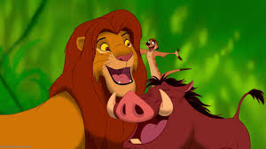

Based on the characters Rosencrantz and Guildenstern from Hamlet, Timon and Pumbaa are played by Nathan Lane and Ernie Sabella. Timon was animated and created by Michael Surrey. They made their first appearances in the 1994 film when they shooed away the vultures that swarmed around young Simba, who had collapsed from heat exhaustion. Timon and Pumbaa then took the collapsed lion cub back to a small pool, where they splashed water on him to wake him up. After Simba is awakened by the two, they introduce themselves and welcome Simba to stay with them and follow their hakuna matata philosophy. At first, Simba is confused about Timon and Pumbaa's lifestyle, but it is explained to him in the song "Hakuna Matata". Many years later, while out on a musical walk with Timon, Pumbaa is distracted by a bug, which he follows into the jungle. The bug leads him right to a hungry lioness prowling around, who then tries to hunt down Pumbaa. She chases the warthog until Simba springs into action, and the two lions engage in conflict. When the lioness pins Simba, he recognizes her as Nala, his childhood playmate. They are happy to be together, but Timon is jealous after they leave for a night of romance. He and Pumbaa start singing the song "Can You Feel The Love Tonight?" and are joined by Simba and Nala on their night out. Still, the two help Simba defeat Scar and gain his rightful place as the king of the Pride Lands, most notably when they create a hula distraction to lure away Scar's hyenas. Pumbaa single-handedly drives off Shenzi, Banzai and Ed. They also stand on top of Pride Rock along with Simba and Nala when Rafiki presents Simba and Nala's newborn cub to the animals of the Pride Lands.
Timon and Pumbaa starred in their own animated television series in which the duo have misadventures in the jungle as well as in various settings. It is also the only media where they are given last names. Timon's is revealed multiple times to be Berkowitz while Pumbaa's is revealed to be Smith. It is notable that a pre-existing storyline of how Timon met Pumbaa appeared in this series. This episode's relation to the Lion King canon is questionable with the introduction of The Lion King 1½. Also it should be noted that the stories for the 'cartoony' series differed greatly from the more serious plots of the three films
